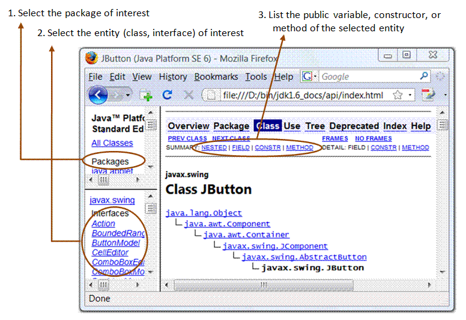

Java Programming
Documentation & JavaDoc
Java Documentation
JDK documentation is, by far, the most important piece of information needed in developing Java programs. You need to download the JDK documentation separately from JDK. Although an online copy is provided at http://java.sun.com/javase/6/docs/, but you should have a local copy, as you need it extensively.
The home page ("index.html") of Java Documentation provides links to many important Java resources, such as "Java Specification", "Java Tutorial" and "JDK Tools and Utilities". Make sure you take a good look at this page to understand the resources available.
JDK API Specification
JDK API Specification is where you can find out the classes available in JDK, the available public methods of a class and the signature of these methods.
- From the "Java Documentation" home page ⇒ Select "API, Language, and VM Specs" ⇒ "Java Platform API Specification". The API specification is organized in 3 panels, as illustrated below. The top-left panel list the packages available, e.g.,
java.lang,java.awt,java.awt.event,javax.swingandjava.io. Recall that Java entities such as classes and interfaces are organized in packages for namespace management.  - You first select the package of interest, says
java.lang, the bottom-left panel will show all the entities available in that package. There are currently six types of entities: (a) ordinary classes, (b) interfaces, (c) errors (d) exceptions (e) enums (enumerations) and (f) annotation types. enum and annotation are introduced in JDK 1.5. - Select an entity of interest, says class
Stringof packagejava.lang. The right panel will display the "public" attributes and operations about this entity. (Only attributes and operations with "public" access visibility will be shown. If you are interested inprivate/protected/package attributes and operations, you need to read the source code.) The information is organized in 4 groups: (a) variables (or fields), (b) constructors, (c) methods, and (d) nested (or inner classes), as reflected in the links on top of the panel. - You can choose to display either the "SUMMARY" or "DETAIL" information. For example, select "SUMMARY: METHOD", all the public methods of the class will be listed, with their signature and brief explanation. Click on the method of interest to read a more detailed explanation of this method.
Javadoc Comment and Utility
[TODO]
Java Tutorial
[TODO]
REFERENCES & RESOURCES
- TODO
Latest version tested: JDK 1.6
Last modified: August 8, 2008